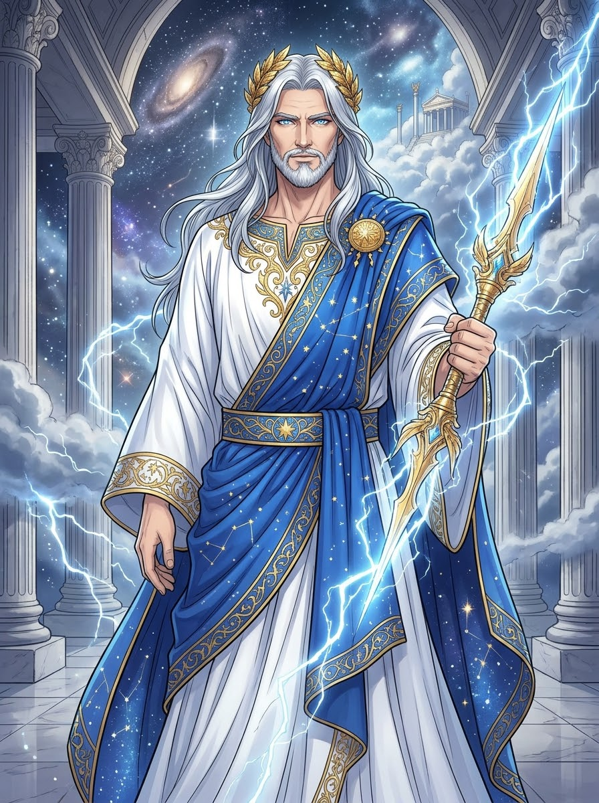

01 · GREEK MYTHOLOGY
宙斯｜Zeus
雷霆與天空的神王
神職：天空、雷霆與神王 象徵：雷霆、鷹、權杖 家族：克洛諾斯與瑞亞之子；赫拉、波塞頓與哈帝斯的兄弟 天文連結：羅馬對應朱庇特 Jupiter，木星的名稱由此而來。
瑞亞為了避開克洛諾斯吞食子女的命運，將年幼的宙斯藏起，讓他得以長大。宙斯後來使兄姊脫離父親的控制，並聯合盟友對抗泰坦，最終建立奧林匹斯的統治秩序。
在《神譜》中，宙斯獲得獨眼巨人打造的雷霆；他又面對堤豐的挑戰，鞏固神王地位。宙斯主持神與人的秩序，也在普羅米修斯、潘朵拉與許多英雄故事中扮演關鍵角色。